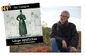
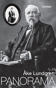
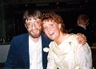

Åke Karl-Erik Lundgren
Författare och journalist, bosatt i Malå, Lappland.
| Född: | 1951-09-24 Björnmoran, Kusmark, Kågedalen kbfd, Skellefteå sn. [1] |
|---|
| Levde: | 1971 Björnmoran, Kusmark, Kågedalen kbfd, Skellefteå kn. [1] |
|---|
| Vigsel: | 1980-06-28 Norsjö fs, Norsjö kn. [2] |
|---|
| Levde: | 1981 Malå, Malå fs, Norsjö kn. [3] |
|---|
| Levde: | 1991 Ugglan 3, Falkv 11, Malå, Malå fs, Malå kn. [2] |
|---|
| Levde: | 2010 Falkvägen 11, Malå, fs, Malå. [4] |
|---|
| Barn: |
|---|
| Eric Gösta Samuel Lundgren (1979 - ) |
| Hans Åke Daniel Lundgren (1982 - ) |
| Ylva Eva Kristina Lundgren (1991 - ) |
Noteringar
Vem är Åke Lundgren?
akelundgren.se/om/index.html
Jag tänker ofta på vad pappa brukade säga:
"He som ska göras, ska göras ordentligt!"
Jag föddes 1951 i byn Kusmark utanför Skellefteå. Utan att veta om det växte jag upp i en av Sveriges författartätaste bygder: norra Västerbotten. Härifrån kommer flera namnkunniga författare: Sara Lidman, Torgny Lindgren och P O Enquist - och många, många fler. Om denna märkliga litterära jordmån berättar jag i "Det litterära arvet", ett kapitel i Svenska Turistföreningens årsbok 2001, med Västerbotten som tema.
Flera Västerbottensförfattare (så även jag) är släkt med varandra, även om det handlar om ett i tiden avlägset släktskap med rötter i byar som Kågeträsk (inom Skellefteå), Kvavisträsk (inom Norsjö) och Burträsk.
"Berättararvet" är ett bärande tema i min roman Zakris arv - berättelsen om ett träd (2014).
Sedan 1974 är jag bosatt i Malå, Lappland.
Med romanen Långa lappflickan - sägnen om Stor-Stina (1981), prisvinnande bidrag i Bra Böckers berättartävling, debuterade jag som författare. Jag nådde till min egen förvåning snabbt en stor läsekrets. Redan då ägnade jag mig åt det tema som varit ständigt återkommande i mitt författarskap: Den lilla, svaga människans utanförskap.
Långa lappflickan är berättelsen om Christina Catharina Larsdoter (1819-1854), sameflickan från Malå som vid 18 års ålder reste ut i världen för att förevisas runt om i Europa för sin ovanliga längd. I sin hembygd har hon gått till historien som Stor-Stina.
2011 utgavs romanen på nytt, en jubileumsutgåva kompletterad med en helt nyskriven biografi med unikt material (i ord och bild), insamlat under de 30 år som förflutit sedan boken först gavs ut.
Jubileumsutgåvan har titeln Långa lappflickan - romanen och bakgrunden.
ARVET
Jag växte upp i utkanten av byn Kusmark i Kågedalens församling, i bydelen Björnmoran där soldaterna en gång levde. I Kvacksalvarna (1988) tecknar jag ett porträtt av mina egna förfäder: soldaten Kruskopp som blev ledslitare - en folkets självlärde botare - och vars arv fördes vidare i flera generationer, bland annat av min egen morfar.
Om födelsebyn berättar jag i dokumentärboken Kusmark - djurdolkens by (1993) och i dokumentärskildringen Guldfeber (2006) skildras såväl min nuvarande som min tidigare hembygds historia.
I antologin Röster i Västerbotten (2003) samlar jag texter av författare och skribenter från olika tider och miljöer och i 1809 - ockupationen av Västerbotten (2009) kombinerar jag journalistik med det litterära.
VREDEN
Vi var en syskonskara på sju barn, fem flickor och två pojkar. Pappa var gjuteriarbetare och drev tillsammans med mamma ett jordbruk. I romanen En stilla vrede (1990) berättas om en farfarsgestalt som bär starka drag av såväl min farfar, som min far och mig själv.
Flera av mina romaner bygger på dokumentär grund. Sara Greta (1986) handlar om en "oäktingen" Sara Greta Pehrsdotters hårda öde på 1800-talet, men beskriver också hur jag ibland arbetar och söker mig fram till mitt material.
I självbiografiska avsnitt berättas om vad som förde mig fram till skrivandet: svårigheter under skoltiden och oförmåga att hävda mig fysiskt.
ÖDEN
Dokumentär i stora stycken är också den trilogi som följde efter debuten: Gudaberget (1982), Trollknuten (1984) och Järtecknet (1985) - en berättelse om samernas kamp för sin urgamla kultur.
En av de romaner som rönt mest uppmärksamhet är Spanskans år (1989), berättelsen om den influensaepidemi som drog över världen i första världskrigets spår och som fick benämningen spanska sjukan; en skildring av hur folket i Norrlands inland tvingades kämpa under närmast omänskliga förhållanden. Den fristående fortsättningen, Storspovens sång (1991), skildrar vad som hände de barn som drabbades av den stora farsoten.
NYCKLAR
För romanen Furstens hus (1992) belönades jag med Östersunds-Postens norrländska litteraturpris och den därpå följande romanen Polykarpus dröm (1993) gick som följetong i riksradion och har dessutom blivit teater i två olika uppsättningar.
Urhos flykt (1994) handlar om den finska evakueringen 1944-45; om flykten från kriget och mötet mellan olika kulturer. I romanen Antonius och Lyckan (1995) ställs frågan vad som är verklig lycka och i Suckarnas allé (1997) berättas om ett verkligt människoöde: en kvinnas kamp för att finna upprättelse och gemenskap. Burk-Curt - samlaren som blev miljonär (2011) är en biografi, ett försök att teckna en annorlunda bild av ett verkligt människoöde i vår egen tid.
Trilogin En levande stjärna (1996), Guldtuppen (1998) och En tid av drömmar (2001) handlar om en pojkes liv på 50- och 60-talen och här finns också många av nycklarna till mitt eget författarskap, något jag sent i livet blivit medveten om.
DRÖMMAR
Jag skrev redan som barn och drömde tidigt om att bli författare, något jag dock trodde var ouppnåeligt. Men skapa ville jag och därför ritade jag serietidningar och skrev berättelser. I tonåren var jag sångare i några amatörpopband. Jag skrev också egna texter för bandet.
Efter en tid inom industri och handel satsade jag på ett yrke som journalist och bosatte mig 1974 i Malå där jag kom att arbeta för tidningen Norra Västerbotten (Norran). I boken Malå - en resa från istid till framtid (1989) berättar jag i ord och bild om min nya hembygd.
År 2010 när tidningen fyllde hundra år - var jag jubileumsredaktör och ansvarig för produktionen av två böcker, dels Historien i Norran som är en kombination av journalistiskt och litterärt utforskande av tidningens hundraåriga arkiv, dels Norran - de hundra första åren, som skrevs av tidningens mångårige medarbetare Bengt Enqvist och där jag fungerade som redaktör.
Som journalist har jag i omgångar haft ansvar för litteraturen och kulturen i tidningen.
TEATERN
Amatörteatern, som skådespelare och pjäsförfattare, blev ett viktigt steg på vägen mot författarskapet och jag var initiativtagare till bildandet av amatörteatergruppen Malak i Malå (verksam åren 1976-84), för vilken jag också skrev ett flertal pjäser. Amatörteatern levde vidare inom Malåbygdens kulturförening (bildad 1984) där jag var ordförande under ett flertal år. På senare år har jag också skrivit för etablerad teater.
Sommaren 1995 spelades Västerbottensteaterns sommarteater Himmel full av fioler, skriven av mig och regissören Stellan Olsson, Helsingborg. Den föddes med anledning av att Skellefteå stad då firade 150 år och framfördes ett stort antal gånger under sommaren.
Samma sommar (1995) hade pjäsen Riddaren från Öjebyn, skriven av mig och nu bortgångne Lasse Eriksson (ståuppkomiker, författare och föreläsare från Piteå, senare bosatt i Uppsala) premiär i Öjebyn, Norrbotten. Året därpå blev det nypremiär av skådespelet.
Våren 2000 framförde Västerbottensteatern en musik- och teaterföreställning baserad på romanen Polykarpus dröm, en föreställning som återkom under 2001. År 2003 gjorde Länsteatern i Östersund (Jämtland-Härjedalen) en helaftonsföreställning byggd på samma roman.
Vårvintern 2015 hade Västerbottensteatern premiär på Bobo Lundéns unika föreställningen S.E.N.S.E. som på ett helt nytt sätt skildrade Långa lappflickans öde, inspirerad av min bok om henne.
HEMBYGDEN
1981-86 var jag ledamot i styrelsen för Norrländska författarsällskapet, större delen av tiden som sekreterare. Jag har också haft diverse uppdrag inom Författarcentrum Norr, Författarcentrum Riks och Sveriges författarförbund. 1991-1997 var jag engagerad i arbetet med bok- och skivarmässan Nordlitt i Skellefteå.
I mitt skrivande hämtar jag näring ur den bygd, den natur, den historia, det språk och de människor som omger mig. Den trakt där jag föddes och lever har för alltid satt prägel på mitt författarskap.
1997 tilldelades jag Landsbygdens författarstipendium (utdelat av Studieförbundet Vuxenskolan och LRF) med motiveringen:
... för att han uthålligt och engagerat utvecklat sitt författarskap, med stadig förankring i den norrländska hembygden, och för att han är en god berättare som skapar sina romanfigurer med humor och medkänsla.
Allra tacksammast är jag dock mot den bygd och de människor som gett mig något att skriva om. Jag minns ännu vad pappa brukade säga:
"He som ska göras, ska göras ordentligt!"
BÖCKER
Långa lappflickan, 1979, prisvinnande roman i Bra Böckers berättartävling 1979
Gudaberget, 1982, första delen i sametriologin om Nordlandet
Trollknuten, 1984, andra delen i sametriologin om Nordlandet
Järtecknet, 1985, tredje delen i sametriologin om Nordlandet
Sara Greta, 1987, en berättelse från 1800-talets Västerbotten
Kvacksalvarna, 1988, en berättelse om författarens egna förfäder
Spanskans år, 1989, första delen i berättelsen om spanska sjukan
En stilla vrede, 1990, en berättelse om att göra något ordentligt
Storspovens sång, 1991, andra delen i berättelsen om spanska sjukan
Furstens hus, 1992, en berättelse om makt och ondska
Polykarpus dröm, 1993, en berättelse om att älska och skapa; Radioföljetong i P1 1994
Urhos flykt, 1994, en berättelse om flyktingar under andra världskriget
Antonius och lyckan, 1995, en berättelse om frihet och lycka
En levande stjärna, 1996, första boken om Björn; Belönad av Norrlandsförbundet; Olof Högbergplaketten 1996
Suckarnas allé, 1997, en berättelse om människans sökande
Guldtuppen, 1998, andra boken om Björn
En tid av drömmar, 2001, tredje boken om Björn
Röster i Västerbotten (red) 2003
Guldfeber 2006
1809 - ockupationen av Västerbotten 2009
Historien i Norran - berättelser genom hundra år 2010
Burk-Curt - samlaren som blev miljonär 2011
Långa lappflickan - romanen och bakgrunden 2011
Furstens hus, 2011-02. Häftad Har belönats med Östersunds-Postens norrländska litteraturpris
Zakris arv, 2014
Panorama, 2017
ÖVRIGA BÖCKER OCH SKRIFTER
Ett sekel i Skelleftebygden, 1972. Studieförbundet Vuxenskolan, medförfattare
Folkmedicin, 1981, Skellefteå museum, medförfattare
Liten historik om Malåbygden, 1981, Studieförbundet Vuxenskolan, medförfattare
Lort-Sverige i dag, 1988, Västerbottenförlaget, medförfattare
Malå - en resa från istid till framtid, 1989. Det här är berättelsen om en bygd mellan hav och fjäll, en trakt med en rik och skiftande historia.
Kusmark - djurdolkens by, 1993. Boken är en kärleksfyll hyllning till den by som formade Åke Lundgren och är rikt illustrerad med fotografier från olika tider.
Tidskriften Västerbotten nr 1/1994, tema: Guldriket, 1994, Västerbottens museum
Västerbotten - utveckling under 100 år, 1999, Informationsförlaget, medförfattare
2001 Västerbotten - Svenska Turistföreningens årsbok, 2000, STF, medförfattare
Röster i Västerbotten, 2003. En antologi i En bok för allas landskapsserie;
BERÄTTARNAS LANDSKAP brukar det kallas - detta Västerbotten som Sara Lidman, Torgny Lindgren, P O Enquist och många andra gjort så uppskattat och älskat. Ett rösternas landskap som långt före dagens författare fängslade både resenärer och andra, och som intar en särställning inom den svenska litteraturen.
Guldfeber - berättelsen om Guldriket och dess människor, 2006, dokumentär bok i berättande form, rikt illustrerad, 122 sidor
1809 - Ockupationen av Västerbotten, 2009, Norra Västerbotten. Åke gav Kungen en nytryckt bok
TEATER
Pjäser genom åren
Sägnen om Stor-Stina
(1976-1977, för teatergruppen Malak) även radioteater i Radio Västerbotten 1977
Vid foten av Gudaberget
(1978, för teatergruppen Malak)
Sagan om Stalo
(1979-1980, för teatergruppen Malak) tillsammans med Eva Lundgren
Nåjden
(1981, för teatergruppen Malak)
Jag, Johannes
(1983, för teatergruppen Malak)
Spelet om Svansele
(1983, för Svansele by)
Suckarnas allé
(1984, för teatergruppen Malak)
Brattlid-Jonke
(1988, för IOGT-teatern, Skellefteå)
Villaks viste
(1988/1990/1992, för Malåbygdens kulturförening) tillsammans med Britta Stenberg
Riddaren från Öjebyn
(1995, för Karlbergsspelen) tillsammans med Lasse Eriksson
Himmel full av fioler
(1995, för Västerbottensteatern) tillsammans med Stellan Olsson
Polykarpus dröm
(2000-2001) Västerbottensteatern - dramatisering a Mikael Lindgren
Polykarpus dröm
(2003-2004) Länsteatern i Jämtland-Härjedalen - dramatisering av Olle Törnqvist
S.E.N.S.E.
(2015) Västerbottensteatern - dramatisering av Bobo Lundén (inspirerad av boken om Långa lappflickan)
NOVELLER/FÖLJETONGER
Drömmen, 1972, Norra Västerbottens julbilaga
Hunger, 1973, Norra Västerbottens julbilaga
Skuggan av en soldat, 1974, följetong i sex delar, Norra Västerbotten 29/7, 30/7, 31/7, 1/8, 2/8, 3/8
Oäktingen, 1975, Norra Västerbottens julbilaga
Stor-Stina, 1976, Norra Västerbottens julbilaga
Häxorna, 1977, Norra Västerbotten skärtorsdag, som radionovell i Radio Västerbotten påsken 1984
Minnet av Jenny, 1977, Norra Västerbottens julbilaga
Gudaberget, 1978, Norra Västerbottens julbilaga
Fext sia, 1979, Norra Västerbottens julbilaga, tidskriften Vårt Län december 1982
Straffdomen, 1980. Norra Västerbottens julbilaga
Aslaks offer, 1981, Norra Västerbottens julbilaga
Utan Krus, 1982, Norra Västerbotten 4/3 1982, tidskriften Sticket nr 7/1983
Domedag, 1982, Norra Västerbottens julbilaga
Dörren, 1983, Norra Västerbottens julbilaga
Kent och jag, 1983, tidskriften Provins nr 4/1983, som radionovell i Radio Västerbotten 30/3 1984
Förälskelser, 1984, följetong i fyra delar, Västerbottningen nr 25, 26, 27, 28.
Farfar, 1984, Norra Västerbottens julbilaga
I väntan på ljuset, 1985, tidskriften Provins nr 1/1985
Gräsätarna, 1986, tidskriften Vårt Län, mars 1986
Timglaset, 1986, Västerbottningen 23/12 1986
Att komma sig för, 1986, Norra Västerbottens julbilaga
Lindanserskan, 1987, Västerbottningen 23/12 1987
Suckarnas allé, 1987, Norra Västerbottens julbilaga
Vandrerskan, 1988, Västerbottningen 29/12 1988
En mur av fruset vatten, 1989, tidskriften Provins nr 2/1989
Anselm och Sina, 1989, Norra Västerbottens julbilaga
Barnrikehuset, 1990, Norra Västerbottens julbilaga, antologin Einstein i Fruängen (utgiven av Ord & Visor förlag/föreningen Arbetarskrivare)
Förtröstan, 1991, Tidskriften Läsenären nr 5/1991
Bokmalen, 1991, Norra Västerbottens julbilaga
Ett hus för Sista, 1992, tidskriften Provins nr 4/1992
Spiskrokvalsen, 1994, Västerbottens-Kurirens julbilaga
Polykarpus dröm (utdrag), 1996, antologin Störstorden (utgiven av Ord & Visor förlag/Västerbottens läns landsting)
Ättestupan, 1996, skolantologin Sverige - ett litterärt lapptäcke (utgiven av Natur och Kultur)
En annan värld, 1997, Västerbottningen 23/12 1997
Operation Ökenstorm, 1997, Norra Västerbottens julbilaga
Det blå rummet, 1998, antologin Kärlek & Bombhot (utgiven av Ord & Visor förlag/föreningen Arbetarskrivare), även i Tredje Novellboken - skolantologi (utgiven av Natur och Kultur 2001)
Kära mormor, 2007, Norra Västerbottens julbilaga
Ättestupan, 2008 - följetong i tre delar, Norra Västerbotten 2, 4 och 5/1 2008
Urhos flykt, 2008-2009, följetong i 15 delar, Norra Västerbotten 22/12 2008 - 12/1 2009
1809 - följetong i 90 delar i Norra Västerbotten 16/5 - 3/9 2009
JOURNALISTIK
1974 anställdes jag som journalist på tidningen Norra Västerbotten, i dag kort och gott kallad Norran, och redan före min anställning arbetade jag som frilansjournalist. Min journalistiska produktion är mycket stor och omfattar åren 1971 till dags dato, det mesta publicerat i Norran.
1983 påbörjade jag en regelbundet återkommande litteraturkrönika, Läsbiten, där jag berättade om vad som hände inom litteraturen (med tonvikt på den norrländska). När tidningen införde en daglig kultursida, började jag i stället medarbeta där.
2008 - 2009 arbetade jag som kulturjournalist vid tidningen, med särskilt ansvar för litteraturbevakningen.
Under år 2010 var jag Norrans jubileumsredaktör, då tidningen firade hundra år. Jag var då redaktör för boken "Norran - de hundra första åren", en bok författad av Bengt Enqvist. Dessutom skrev jag en egen bok: "Historien i Norran - berättelser ur tidningsarkivet genom hundra år".
Vid sidan av mitt journalistiska arbete och författarskapet har jag genom åren bland annat medverkat i Norrländsk Uppslagsbok, i olika faktaböcker och i ett flertal tidskrifter.
Här ges endast ett urval ur produktionen:
Om sökandet efter den långa lappflickan - om romanen Långa lappflickan (tidskriften Thule nr 1/1983)
Fattiglappar, är det något att skriva om - om romanen Gudaberget (Bra om Böcker, nr 96)
Att söka hämnd är alltid att misslyckas - om romanen Trollknuten (Bra om Böcker, nr 106)
Jag är stolt att vara same - temanummer om samer (tidskriften Impuls nr 3/1985)
Irland - Europas fattigaste land, artikelserie (Norran 21/5, 24/5, 30/5, 7/6, 19/6 1985)
Rudtjebäcken - monumentet som vägrade att falla (tidskriften Provins, nr 4/1986)
Gulnade dokument blir romaner (Föreningen för Skellefteforskning, rapport nr 2, 1988)
Malå i norr: Här blommar kulturen (tidskriften Impuls nr 3/1989)
Nu skriver han igen - om Kurt Salomonson (Norran 28/2 1989)
Torgny Lindgren på stol nio i Akademien (Norran 2/3 1991)
Solens skådespel - om Newgrange på Irland (Norran 21/12 1991)
Här föds framtidens norrländska författare - om skrivarkurserna på Medlefors (Norran 11/8 1992)
Sara Greta - en barnamörderska eller en av dessa små? (Skelleftebygden 1993)
Björn Ranelid: - Jag skriver i glädje! (Norran 9/11 1993)
En tågresa då livet hann ifatt - om att resa i norr (tidskriften Provins nr 2/1994)
Kulturstad Skellefteå - om en stad som fyller 150 år (tidskriften Provins nr 1/1995)
Guldruschen som förvandlade Västerbotten (boken Västerbotten - utveckling under 100 år, 1999)
Det litterära arvet (2001 Västerbotten - Svenska Turistföreningens årsbok, 2000)
Nu lyfts Kniv-Elis fram i ljuset (Norran 5/11 2002)
De många rösternas landskap (tidskriften Provins nr 4/2003)
Förste älskare på vita duken - Peter Höglund (Norran 11/3 2005)
En 90 år gammal dagbok (tidskriften Västerbotten nr 1/2007)
Linnés dagbok om Lappland (Norran 19/5 2007)
På jakt efter den Västerbottniska berättarsjälen (Norran 7/7 2007)
Astrid Väring - Västerbottens litterära pionjär (Norran 14/7 2007)
Torgny Lindgren - Västerbottens starka berättarröst (Norran 4/8 2007)
Mitt 1968: När alla drömmar var möjliga (Norran 14/8 2008)
Johannes och den stora drömmen (Norran 20/11 2008)
Jenny Nyström, livet och konsten (Norran 23/12 2008)
Om konsten att måla en värld (Norran 13/1 2009)
Julia - en fantasyförfattare (Norran 24/2 2009)
"Att skriva är en kärlekshandling" - om Elisabeth Rynell (Norran 10/3 2009)
När hjältarna räddade världen och hur jag fann läsglädjen och fantasin (Norran 1/12 2009)
Konsten att inte förråda - om Sara Lidman (Norran 23/4 2011)
Geddas karta är oskattbar (Norran 9/7 2011)
Lapplands apostel var en kvinna (Norran 20/8 2011)
Likholmen - rastplats inför den eviga vilan (Norran 8/10 2011)
Stor-Stina slutade aldrig växa (Allt om Historia nr 4/2012)
Den förföriska kiosklitteraturen (Norran 11/9 2012)
Planscherna i våra hjärtan - om skolplanscherna (Norran 16/10 2012)
En känsla av under - om science fiction-litteraturen (Norran 4/12 2012)
Drömmen om en skrivande maskin - om skrivmaskiner (Norran 11/12 2012)
En bok är en bok är en ... läsplatta (Norran 12/2 2013)
Tvätta, tvätta, tvätta - drömmen om tvättmaskinen (Norran 26/2 2013)
Stålmannen - en 75-årig räddare på övertid (Norran 30/4 2013)
Upproret i Kautokeino 1852 - Samerna slog tillbaka mot överheten (Allt om Historia nr 5/2013)
Sundsvall och Umeå lades i aska 1888 - Två städer brann på samma dag (Allt om Historia nr 6/2013)
På flykt från ett land i brand (Norran 18/9 2013)
Kiosk-Gösta - kulturens budbärare i Kusmark (Norran 7/1 2014)
Svälten i Norrland 1867 - Hungriga bönder tvingades arbeta för barkbröd (Allt om Historia nr 9/2014)
Präglade av landskapet - om det västerbottniska berättandet (Berätta, litterärt magasin, 2014)
STIPENDIER OCH PRISER
En av vinnarna i Bra Böckers berättartävling 1979
Västerbottens läns landstings kulturstipendium 1981
Norsjö kommuns kulturstipendium 1982
Sveriges författarfond 1985/86 - 89/90
Malå kommuns kulturstipendium 1989
Malå Naturskyddsförenings miljöpris 1990
Sveriges författarfond 1992 - 97
Östersunds-Postens norrländska litteraturpris 1992
Författarnas Fotokopieringsfond 1993
Norrlandsförbundets hedersbelöning Olof Högbergplaketten 1996
Landsbygdens författarstipendium 1997
Författarnas Fotokopieringsfond 1998
Sveriges författarfond 1999-2001
Du kan få ännu mer information genom att besöka Åke Lundgrens egen utmärkta och fullmatade hemsida: www.akelundgren.se/ och på Facebook:
www.facebook.com/find-friends/#!/profile.php?id=100000277522441&ref=ts
Personhistoria
| Årtal | Ålder | Händelse |
|---|
| 1951 |
|
Födelse 1951-09-24 Björnmoran, Kusmark, Kågedalen kbfd, Skellefteå sn [1] |
| 1954 |
2 år |
Brodern Jan Karl-Gunnar Lundgren föds 1954-03-10 Björnmoran, Kusmark, Kågedalen kbfd, Skellefteå sn [1] |
| 1957 |
5 år |
Makan Eva Astrid Margareta Lidén Lundgren föds 1957-02-15 Svansele 1, Norsjö fs, Norsjö sn [1] |
| 1958 |
6 år |
Systern Inga-Lill Marie Lundgren föds 1958-09-21 Björnmoran, Kusmark, Kågedalen kbfd, Skellefteå sn [1] |
| 1971 |
|
Levde 1971 Björnmoran, Kusmark, Kågedalen kbfd, Skellefteå kn [1] |
| 1979 |
27 år |
Sonen Eric Gösta Samuel Lundgren föds 1979-06-17 Malå, Malå fs, Norsjö kn [3] |
| 1980 |
28 år |
Vigsel Eva Astrid Margareta Lidén Lundgren 1980-06-28 Norsjö fs, Norsjö kn [2] |
| 1981 |
|
Levde Eva Astrid Margareta Lidén Lundgren 1981 Malå, Malå fs, Norsjö kn [3] |
| 1982 |
30 år |
Sonen Hans Åke Daniel Lundgren föds 1982-04-20 Malå, Malå fs, Norsjö kn |
| 1991 |
|
Levde Eva Astrid Margareta Lidén Lundgren 1991 Ugglan 3, Falkv 11, Malå, Malå fs, Malå kn [2] |
| 1991 |
39 år |
Dottern Ylva Eva Kristina Lundgren föds 1991-05-02 Ugglan 3, Falkv 11, Malå, Malå fs, Malå kn [2] |
| 1991 |
39 år |
Fadern Erik Valdemar Lundgren dör 1991-08-18 Kåge, Kågedalens fs, Skellefteå kn [5] |
| 1996 |
44 år |
Modern Midjan (Mirjam) Margareta Nilsson dör 1996-07-12 Kåge, Kågedalens fs, Skellefteå kn [6] |
| 2010 |
|
Levde Eva Astrid Margareta Lidén Lundgren 2010 Falkvägen 11, Malå, fs, Malå [4] |
Dokument
Källor
| [1] | Mtl Västerbottens län 1971 |
| |
| | |
| [2] | Mantalslängd 1991, Västerbottens län |
| |
| | |
| [3] | Mtl Västerbottens län 1981 |
| |
| | |
| [4] | https://www.ratsit.se/sok/avancerat/person |
| |
| | |
| [5] | SPAR 92, RTB 91 |
| |
| | |
| [6] | SPAR 96, RTB 96, SPAR 92 |
| |
|
|  |
2011. Åke Lundgren, Författare och journalist.
www.akelundgren.se
|
| |
|  |
2017. Ny dokumentär roman - författarens 27:e bok
Året är 1857, en tid för cirkussällskap och märkliga "spektakler".
Den sjuttonårige tysken Carl Franke förälskar sig i den fjortonåriga lindanserskan Josephina Riégo. Bägge tillhör ett resande sällskap som färdas land och rike runt med sina uppvisningar. När de så småningom bildar familj blir de pionjärer inom ett helt nytt område: fotografikonsten.
Panorama är Åke Lundgrens tjugosjunde bok, en roman med verklighetsbakgrund. Det är en berättelse om kärlek, drömmar och illusioner i den västerbottniska staden Skellefteås tidiga barndom.
Utgiven: 2017
Förlag: Ord & visor
ISBN: 978-91-87949-65-4
Grafisk form: Maria Olofsson
Omslagsfoton: Skellefteå museum
Inbunden, 300 sidor
akelundgren.se/produktioner/romaner/panorama.html
|
| |
|  |
| 1985. Eva and me at Lars and Kays wedding. Irland 1985. |
|
{kind=link}
{kind=link}
{kind=link}